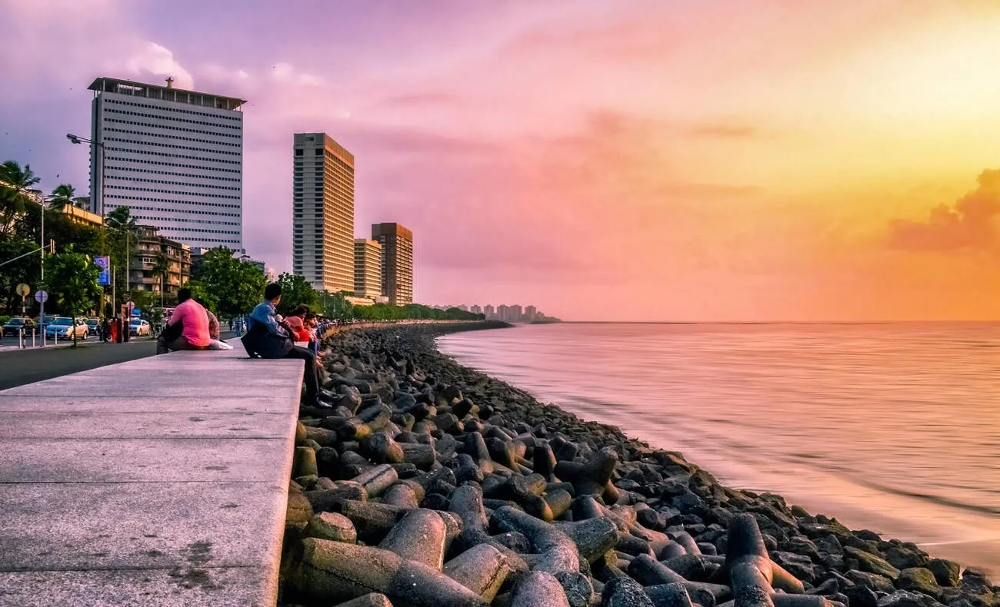
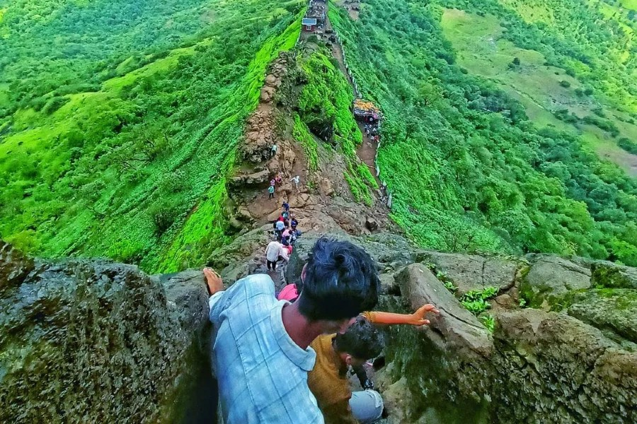
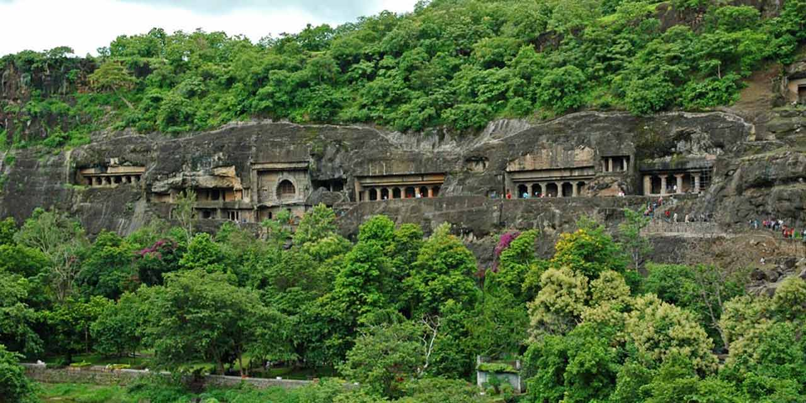
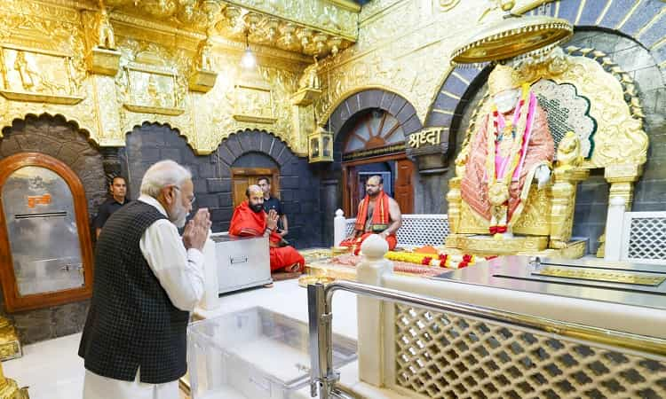
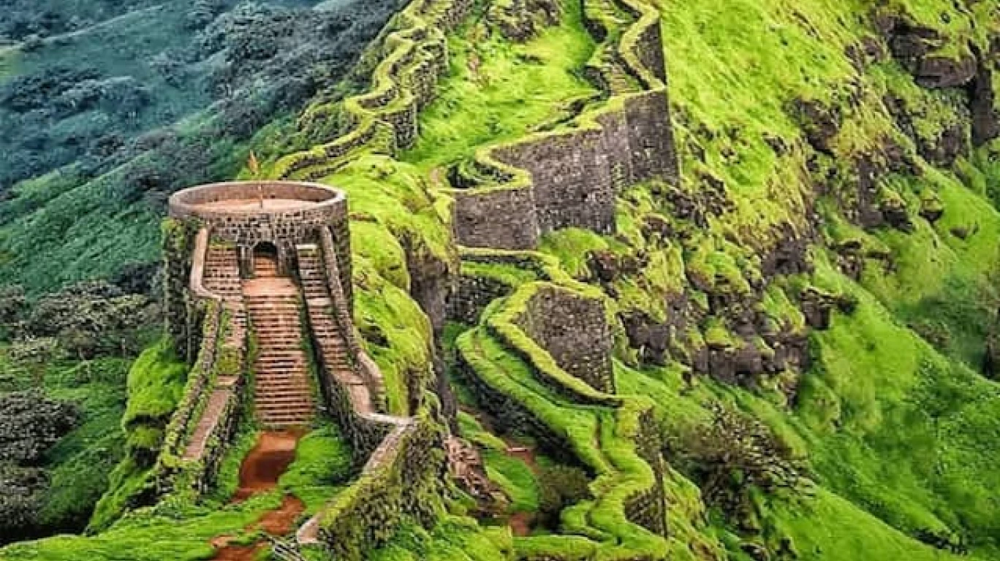

Marine Drive located in South Mumbai, is a 3.6 km long boulevard along
the Arabian Sea, known for its stunning sea view and peaceful vibes. Popularly
called the "Queen’s Necklace," the curve of street lights at night resembles a
glowing necklace from afar. It’s a favorite hangout spot for locals and tourists
who come to enjoy the cool breeze, watch sunsets, or simply relax by the
promenade. Early mornings bring joggers and yoga enthusiasts, while evenings
fill the place with couples, families, and street food lovers. Marine Drive
reflects the soul of Mumbai—calm yet always alive, offering a perfect blend
of nature, cityscape, and emotion.

Harihar Gadh also known as Harihar Fort, is a beautiful hill fort located in
the Nashik district of Maharashtra. It is famous for its steep, rock-cut staircase
that almost stands vertical, making it one of the most thrilling treks in the
region. The fort stands at a height of around 3,676 feet and offers stunning views
of the Sahyadri mountains and green valleys. Climbing the stairs feels like an
adventure, with narrow steps and hand grooves carved into the rock for support.
At the top, you’ll find small temples, water tanks, and old stone structures that
take you back in time. Trekkers and nature lovers especially enjoy visiting during
the monsoon or winter months when the surroundings are lush and green.

Ajanta Leni located near Aurangabad in Maharashtra, is a group of ancient
Buddhist caves carved into a horseshoe-shaped rock cliff. These caves date back
to the 2nd century BCE to the 6th century CE and are world-famous for their
stunning rock-cut architecture, statues of Buddha, and beautiful wall paintings. The Ajanta caves were used as prayer halls and monasteries by Buddhist monks and were later lost in time until they were rediscovered in 1819 by British officers. The murals in these caves depict stories from the life of Buddha and scenes from ancient Indian life, culture, and mythology.

Sai Baba Mandir Shirdi one of the most famous and sacred temples in India. It is the resting place of Sai Baba, a saint respected by both Hindus and Muslims, known for his teachings of love, peace, and equality. The temple complex includes the Samadhi Mandir, where his tomb is located, and other important places like Dwarkamai, Gurusthan, and Chavadi, which were part of Baba’s daily life. A beautiful white marble idol of Sai Baba sits in the temple, where thousands of devotees visit every day to seek blessings. The atmosphere is peaceful and spiritual, filled with prayers and the sound of aarti. Special crowds gather on Thursdays and during festivals like Ram Navami and Guru Purnima.

Raigad Fort is a historic hill fort located in the Sahyadri mountain range in Maharashtra. It was the capital of Chhatrapati Shivaji Maharaj’s Maratha Empire and the site where he was crowned king in 1674. The fort sits at a height of around 4,400 feet and offers breathtaking views of the surrounding valleys and hills. Visitors can reach the top by climbing over 1,700 steps or by taking a scenic ropeway ride. The fort complex includes the Maha Darwaja (main gate), royal palace ruins, marketplace, Jagadishwar temple, and the Samadhi (tomb) of Shivaji Maharaj. Every part of Raigad tells a story of courage, leadership, and Marathi pride. Walking through its ruins feels like walking through history.